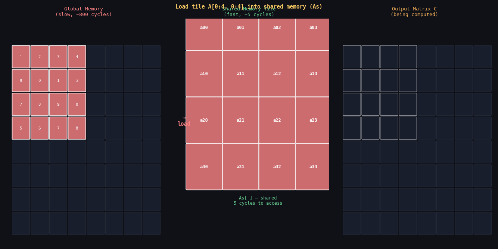
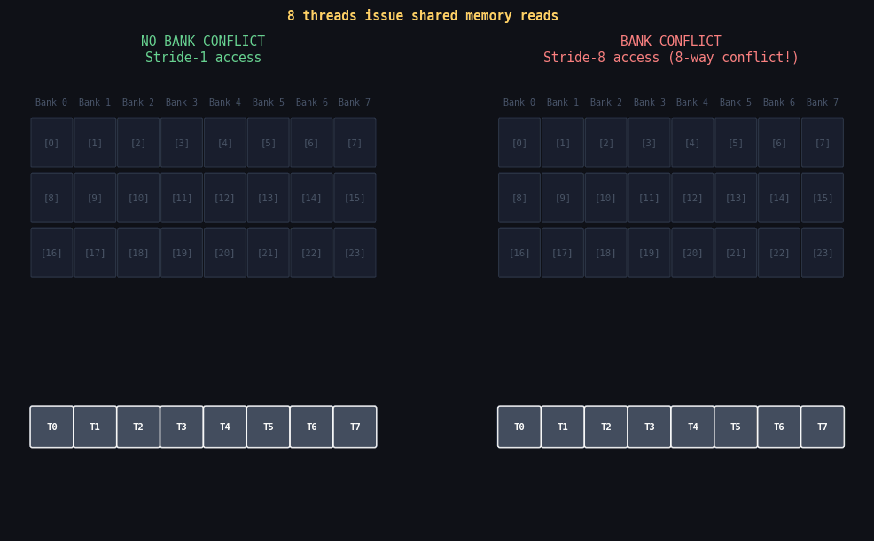

The A100 GPU has 192 KB of shared memory per SM. That's not much on paper — your laptop has 32 GB of RAM. But shared memory is on the same chip as the compute cores, separated from them by wire lengths measured in micrometers rather than millimeters. The result: ~5 cycle latency vs. ~800 for global DRAM. A 160× difference.
Understanding shared memory means understanding three things: why it exists, how to use it correctly (with __syncthreads), and how to avoid bank conflicts. This post covers all three with complete working code.

Tiled matrix multiplication: threads cooperatively load a tile from global memory into shared memory, then compute against it. Each global value is reused across an entire tile row/column — reducing global traffic by the tile dimension (e.g., 16× for a 16×16 tile).
In this post
- Why Shared Memory Exists
- Declaring and Using Shared Memory
- __syncthreads() — The Barrier
- The Tiling Pattern — Tiled Matrix Multiplication
- Bank Conflicts — The Hidden Danger
- Fixing Bank Conflicts with Padding
- __syncwarp() vs __syncthreads()
- Shared Memory Capacity and Occupancy
- Profiling Shared Memory Usage
Why Shared Memory Exists
Consider matrix multiplication: C = A × B where each C[i][j] = dot(row i of A, col j of B). In a naive implementation, thread (i,j) reads all of row i from A and all of col j from B from global memory. For a 1024×1024 matrix:
- Each thread reads 1024 floats from A + 1024 floats from B = 2048 global reads
- 1024×1024 = 1,048,576 threads total
- Total global reads: 1,048,576 × 2048 = ~2 billion reads
- But A has only 1024×1024 = 1M unique values — each value read ~1024 times
That 1024× reuse of each value is the opportunity. If we can load each value once into shared memory and reuse it from there, we reduce global reads by 1024×. This is exactly what tiling does.
Declaring and Using Shared Memory
// 1. Static shared memory: size known at compile time
__global__ void staticSharedKernel(float* out, int n) {
__shared__ float tile[256]; // 256 floats = 1 KB
__shared__ int histogram[64]; // separate shared arrays
int tid = threadIdx.x;
tile[tid] = ...; // load something
// use tile[...]
}
// 2. Dynamic shared memory: size set at kernel launch
__global__ void dynamicSharedKernel(float* out, int n) {
extern __shared__ float dynTile[]; // size unknown at compile time
int tid = threadIdx.x;
dynTile[tid] = ...;
}
// Launch with dynamic shared memory:
int smemBytes = blockDim * sizeof(float);
dynamicSharedKernel<<<gridDim, blockDim, smemBytes>>>(out, n);
// 3. Multiple arrays in dynamic shared memory (manual offset):
__global__ void multiArrayKernel() {
extern __shared__ float s[];
float* arrA = s; // starts at byte 0
float* arrB = s + blockDim.x; // starts after arrA
int* iArr = (int*)(s + 2*blockDim.x); // careful with alignment!
}__syncthreads() — The Barrier
__syncthreads() is a block-wide barrier. It guarantees that every thread
in the block has completed all memory accesses (reads and writes) before any thread
proceeds past it. Without it, shared memory races cause silent data corruption.
__global__ void needsSync(float* input, float* output, int n) {
__shared__ float sdata[256];
int tid = threadIdx.x;
int gid = blockIdx.x * blockDim.x + threadIdx.x;
// Phase 1: each thread writes its value
sdata[tid] = (gid < n) ? input[gid] : 0.0f;
__syncthreads(); // REQUIRED: ensure all writes complete before any reads
// Phase 2: each thread reads its neighbor
float neighbor = (tid > 0) ? sdata[tid - 1] : 0.0f;
output[gid] = sdata[tid] + neighbor;
// No sync needed at end: no one reads sdata after this
}sdata[N-1] before thread N-1 has written it. The result is non-deterministic
garbage that changes with GPU load. compute-sanitizer --tool racecheck
will catch this.
Rules for __syncthreads():
- Every thread in the block must reach the barrier — never put it inside a conditional that only some threads enter (deadlock or undefined behavior)
- It does NOT synchronize across blocks — only within one block
- It does NOT replace global memory fences (use
__threadfence()for that) - Each call has a cost: ~20-30 cycles per sync on A100. Don't add unnecessary barriers.
The Tiling Pattern — Tiled Matrix Multiplication
Tiled matrix multiply is the canonical example of shared memory. Here is the complete, production-quality implementation with all corner cases handled:
#define TILE_SIZE 16
__global__ void tiledMatMul(const float* A, const float* B, float* C,
int M, int N, int K) {
// A is M×K, B is K×N, C is M×N
__shared__ float sA[TILE_SIZE][TILE_SIZE];
__shared__ float sB[TILE_SIZE][TILE_SIZE];
int row = blockIdx.y * TILE_SIZE + threadIdx.y; // row of C
int col = blockIdx.x * TILE_SIZE + threadIdx.x; // col of C
float sum = 0.0f;
// Sweep tiles across the K dimension
int numTiles = (K + TILE_SIZE - 1) / TILE_SIZE;
for (int t = 0; t < numTiles; t++) {
// --- Cooperatively load tile from A into sA ---
int aRow = row;
int aCol = t * TILE_SIZE + threadIdx.x;
sA[threadIdx.y][threadIdx.x] = (aRow < M && aCol < K)
? A[aRow * K + aCol] : 0.0f;
// --- Cooperatively load tile from B into sB ---
int bRow = t * TILE_SIZE + threadIdx.y;
int bCol = col;
sB[threadIdx.y][threadIdx.x] = (bRow < K && bCol < N)
? B[bRow * N + bCol] : 0.0f;
__syncthreads(); // ensure tile is fully loaded before computing
// --- Compute partial dot product using shared memory tile ---
for (int k = 0; k < TILE_SIZE; k++) {
sum += sA[threadIdx.y][k] * sB[k][threadIdx.x];
}
__syncthreads(); // ensure compute done before loading next tile
}
// Write result
if (row < M && col < N) {
C[row * N + col] = sum;
}
}Let's trace what happens for one tile iteration:
- Thread (ty, tx) loads A[row][t*T + tx] into sA[ty][tx] — coalesced global read
- Thread (ty, tx) loads B[t*T + ty][col] into sB[ty][tx] — coalesced global read
__syncthreads()— all 256 threads complete their loads- Each thread computes 16 multiply-adds using sA and sB — all shared memory, no global
__syncthreads()— all compute done, safe to overwrite tile for next iteration
Performance result: for 4096×4096 matrices on A100:
Even the simple TILE=16 implementation is 22× faster than naive. cuBLAS reaches 64% of peak by using additional optimizations: tensor cores, double-buffering, and aggressive register reuse.
Bank Conflicts — The Hidden Danger

Left (stride-1): each thread accesses a different bank — 32-way parallel, zero serialization. Right (stride-8): multiple threads hit the same bank — the hardware serializes them into 8 sequential transactions, multiplying effective latency by 8×.
Shared memory is divided into 32 banks, each 4 bytes wide. Consecutive 4-byte words map to consecutive banks:
- byte 0–3 → bank 0
- byte 4–7 → bank 1
- byte 8–11 → bank 2
- ...
- byte 124–127 → bank 31
- byte 128–131 → bank 0 (wraps)
All 32 banks can be read simultaneously in one clock cycle. A bank conflict occurs when two or more threads in the same warp access different addresses in the same bank. The hardware serializes these accesses, multiplying the latency.
// NO CONFLICT: thread i accesses sdata[i]
// Thread 0 → bank 0, Thread 1 → bank 1, ..., Thread 31 → bank 31
__global__ void noConflict(float* out) {
__shared__ float sdata[256];
int tid = threadIdx.x;
sdata[tid] = tid * 1.0f; // stride-1: each bank gets one thread
out[tid] = sdata[tid];
}
// 2-WAY CONFLICT: thread i accesses sdata[i * 2]
// Thread 0 → bank 0, Thread 1 → bank 2, ..., Thread 16 → bank 0 (conflict!)
__global__ void twoWayConflict(float* out) {
__shared__ float sdata[512];
int tid = threadIdx.x;
sdata[tid * 2] = tid * 1.0f; // stride-2: 2-way conflict
out[tid] = sdata[tid * 2];
}
// 32-WAY CONFLICT: thread i accesses sdata[i * 32]
// ALL 32 threads map to bank 0!
__global__ void worstCase(float* out) {
__shared__ float sdata[1024];
int tid = threadIdx.x;
sdata[tid * 32] = tid * 1.0f; // stride-32: 32-way conflict = fully serialized
out[tid] = sdata[tid * 32];
}Bank conflict formula for stride S:
- S = 1: no conflict (1 transaction)
- S = 2: 2-way conflict (2 transactions)
- S = 4: 4-way conflict (4 transactions)
- S = 16: 16-way conflict (16 transactions)
- S = 32: maps to stride-0 — BROADCAST (1 transaction, all threads read same address)
Fixing Bank Conflicts with Padding
The classic bank conflict scenario in matrix operations: loading a column
of a row-major matrix into shared memory, then having threads read the same column.
Each column element is separated by TILE_SIZE floats = TILE_SIZE * 4 bytes.
If TILE_SIZE = 32, stride = 32 floats = 32 banks → all threads hit bank 0 →
32-way conflict.
The fix: add one extra float of padding to make the effective stride 33 instead of 32, which is not a power of 2 and breaks the conflict pattern:
#define TILE 32
__global__ void transposePadded(const float* input, float* output, int W, int H) {
// +1 padding eliminates bank conflicts when reading columns
__shared__ float tile[TILE][TILE + 1];
int x = blockIdx.x * TILE + threadIdx.x;
int y = blockIdx.y * TILE + threadIdx.y;
// Load: coalesced read (stride-1 along x = consecutive threads, consecutive banks)
if (x < W && y < H)
tile[threadIdx.y][threadIdx.x] = input[y * W + x];
__syncthreads();
// Write transposed: threads now read columns of tile
// Without padding: stride = TILE = 32 → 32-way conflict
// With +1 padding: stride = TILE+1 = 33 → no conflict (banks never repeat)
int tx = blockIdx.y * TILE + threadIdx.x; // transposed coordinates
int ty = blockIdx.x * TILE + threadIdx.y;
if (tx < H && ty < W)
output[ty * H + tx] = tile[threadIdx.x][threadIdx.y];
}
// Performance comparison (4096x4096 float matrix, A100):
// Without padding: 3.4 ms (32-way conflict on every column read)
// With padding: 0.18 ms (conflict-free: 19x faster!)
sdata[H][W+1].
This shifts each row by one bank, so consecutive rows start at consecutive banks,
eliminating the column-access conflict. Cost: 1 extra float per row = ~0.1% memory overhead.
__syncwarp() vs __syncthreads()
Since Volta (sm_70), CUDA introduced independent thread scheduling: threads within a warp can now be at different program counter positions. This means that intra-warp sharing of shared memory now requires explicit synchronization even within a warp.
// UNSAFE post-Volta: warp threads may be at different positions
__global__ void unsafeWarpSharing(float* out) {
__shared__ float sdata[32];
int tid = threadIdx.x;
sdata[tid] = tid * 2.0f;
// Pre-Volta: warp executes lockstep, so this is fine
// Post-Volta: thread i+1 might not have written yet when thread i reads
float neighbor = sdata[(tid + 1) % 32]; // potential race!
out[tid] = neighbor;
}
// SAFE: use __syncwarp() for intra-warp shared memory synchronization
__global__ void safeWarpSharing(float* out) {
__shared__ float sdata[32];
int tid = threadIdx.x;
sdata[tid] = tid * 2.0f;
__syncwarp(); // synchronize all threads in this warp (faster than __syncthreads)
float neighbor = sdata[(tid + 1) % 32];
out[tid] = neighbor;
}| Function | Scope | Cost | Use when |
|---|---|---|---|
| __syncthreads() | Entire block | ~20-30 cycles | Sharing data across warps |
| __syncwarp() | Single warp (32 threads) | ~5 cycles | Intra-warp shared memory sharing (post-Volta) |
| __threadfence() | Device-wide | ~100+ cycles | Cross-block global memory visibility |
| cudaDeviceSynchronize() | Host + all kernels | ms-range | CPU needs to see GPU result |
Shared Memory Capacity and Occupancy
On A100, each SM has 192 KB of combined L1/shared memory. How much goes to shared memory is configurable. The default is 100 KB shared / 32 KB L1, but you can push up to 164 KB shared / 32 KB L1 for kernels that need a lot.
Shared memory affects occupancy the same way registers do: if each block uses 48 KB and the SM has 96 KB available, only 2 blocks can run simultaneously.
// Query available shared memory:
cudaDeviceProp prop;
cudaGetDeviceProperties(&prop, 0);
printf("Shared mem per SM: %zu KB\n", prop.sharedMemPerMultiprocessor / 1024);
printf("Shared mem per block: %zu KB\n", prop.sharedMemPerBlock / 1024);
// For large shared memory (above 48 KB), must set attribute:
cudaFuncSetAttribute(myKernel,
cudaFuncAttributeMaxDynamicSharedMemorySize,
96 * 1024); // 96 KB
// Check occupancy given shared memory usage:
int minGridSize, blockSize;
cudaOccupancyMaxPotentialBlockSizeVariableSMem(
&minGridSize, &blockSize, myKernel,
[](int blockSize) { return blockSize * sizeof(float); }, // smem as fn of blockSize
0);Profiling Shared Memory Usage
# Check bank conflicts with ncu:
ncu --metrics l1tex__data_bank_conflicts_pipe_lsu_mem_shared_op_ld.sum, l1tex__data_bank_conflicts_pipe_lsu_mem_shared_op_st.sum, l1tex__t_bytes_pipe_lsu_mem_shared_op_ld.sum ./myprogram